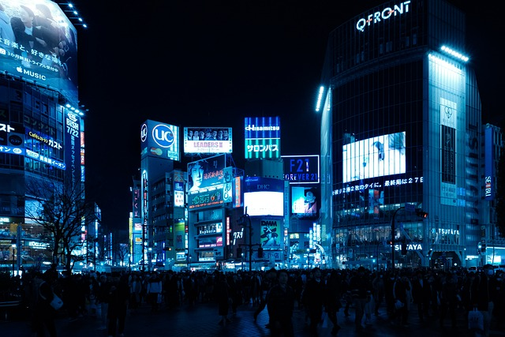

Shibuya, one of Tokyo's most vibrant districts, is renowned for its bustling energy and iconic landmarks. The Shibuya Crossing, often dubbed the world's busiest pedestrian crossing, is a must-see spectacle of organized chaos. Just steps away is the famous Hachiko Statue, a heartwarming tribute to the loyal Akita dog, and a popular meeting spot. Shibuya is a shopping paradise, with towering department stores like Shibuya 109 offering the latest fashion trends. The district also boasts a dynamic nightlife scene, with numerous bars, clubs, and live music venues. Explore Shibuya's side streets to discover quirky cafes, unique boutiques, and hidden gems. For a touch of tranquility, visit the peaceful Shibuya Shrine tucked amidst the urban landscape. The area is also a culinary hotspot, featuring a diverse range of dining options from sushi bars to international cuisine. Shibuya's creative energy is palpable, making it a favorite destination for both locals and tourists. Whether you're looking to shop, dine, or simply soak in the lively atmosphere, Shibuya promises an unforgettable experience.